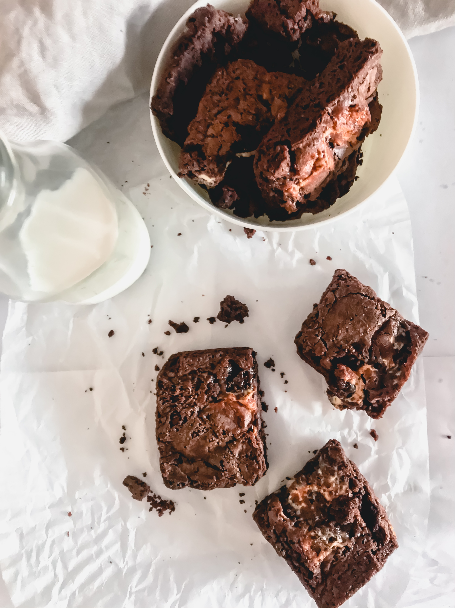

Brownies

Description
These super fudgy homemade brownies are thick, rich, extra-chocolatey, and super moist. They're the ultimate homemade fudge brownie!
Text from Budget Bytes.
Ingredients
- 12 tbsp salted butter
- 2 tbsp cooking oil
- 3/4 cup unsweetened cocoa powder
- 1 1/4 cup granulated sugar
- 2 eggs
- 2 tbsp vanilla extract/li>
- 1/4 tsp salt
- 3/4 cup all purpose flour
- 1/2 cup chocolate chips
Steps
- Preheat the oven to 350ºF. Melt the butter in a large bowl in the microwave (or in a saucepot and then transfer to a bowl).
- Add the cooking oil and cocoa powder to the melted butter and whisk until smooth.
- Whisk the sugar into the chocolate mixture until evenly incorporated, then whisk in the eggs, vanilla extract, and salt.
- Stir in the flour until it forms a thick batter. Finally, fold in the chocolate chips.
- Prepare an 8×8-inch baking dish by coating it with butter or non-stick spray, then laying in a piece of parchment paper (the paper does not need to cover all sides of the dish). Add the brownie batter to the prepared dish, then spread it out evenly.
- Bake the brownies in the preheated oven for 40 minutes. The brownies will be quite soft and moist, even when fully baked.
- Remove the brownies from the oven and let them cool for 10 minutes before lifting them out of the baking dish. Slice into nine pieces and serve.
Home